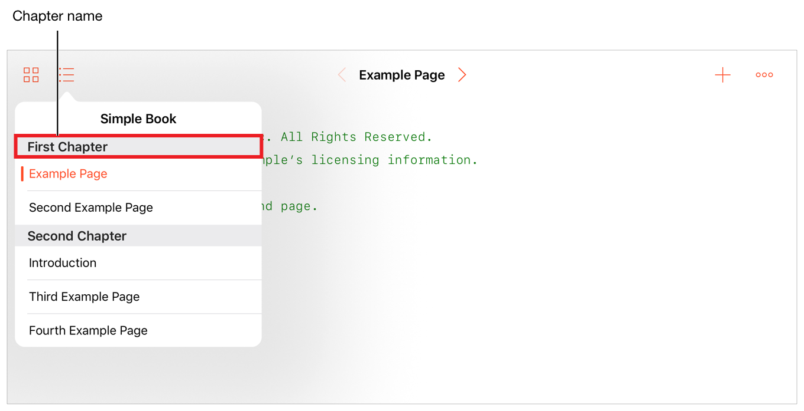
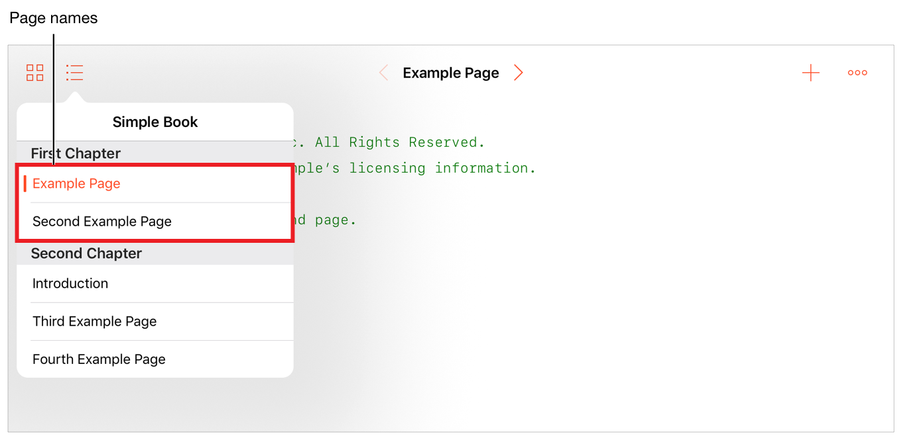

Chapter Manifest
章マニフェスト
The Manifest.plist file for a chapter contains the following key-value pairs specifying the attributes for a chapter:
ある章のためのManifest.plistは、以下のキー値ペアを含んでいて、ある章の属性を指定します：
Order of pages
ページ順序User-viewable name for the chapter
その章のためのユーザに見られる名前
The file is located in the .playgroundchapter folder for the chapter.
このファイルは、その章のための.playgroundchapterフォルダに位置します。
Key List
キーのリスト
Table 3-1 describes each key for a chapter, its type, and whether the key is required.
表 3-1 は、ある章のための各キーを、そしてそのキーが必須かどうかを記述します。
Key
|
Type
|
Description
|
Required
|
|---|---|---|---|
|
String |
The name displayed in the user interface. See Name Key.
|
✓ |
|
Array of strings
|
The list of pages in a chapter, in the order in which they appear in the table of contents. See Pages Key.
|
✓ |
Figure 3-1 shows an example property list using the keys available in the chapter manifest file.
図 3-1 は、章マニフェストファイルにおいて利用可能なキーを使って、実例プロパティリストを示します。
図 3-1 章マニフェストプロパティリスト

Name Key
Nameキー
The display name of the chapter in the user interface; for example, the name of a chapter in the table of contents.
ユーザインターフェイスにおけるその章の表示名；例えば、目次におけるある章の名前。
The name is also used as part of the link to the first use of a glossary term. (See PageReference Key in Glossary Property List.)
名前はまた、ある語彙集用語の最初の利用に対するリンクの一部として使われます。（PageReferenceキーをグロッサリープロパティリストで見てください。）
In Figure 3-2, First Chapter is used as the name of the chapter in the table of contents.
図 3-2では、First Chapterは目次における章の名前として使われます。
図 3-2 目次のおける章名 
Pages Key
Pagesキー
An array of the .playgroundpage and .cutscenepage folders used for the pages in a chapter. Each entry in the array contains the name and extension of a folder in the Pages folder for a chapter. The table of contents for the chapter displays only the pages listed in this array. The order of items in the Pages array defines the order of the pages in the chapter.
ある章の中の様々なページに対して使われる.playgroundpageおよび.cutscenepageフォルダの配列。配列の中の登録項目それぞれは、ある章のためのPagesフォルダの中のあるフォルダの名前と拡張子を含みます。その章のための目次は、この配列の中に列記されるページのみを表示します。Pages配列の中の用語の順序は、その章の中のページの順序を定義します。
Figure 3-3 shows a table of contents with two pages for the first chapter. The name of each page is the value of the Name key in the manifest file for the playground page or cutscene page.
図 3-3 は、最初の章のための２つのページを持つ目次を示します。各ページの名前は、プレイグラウンドページまたはカットシーンページのためのマニフェストファイルの中のNameキーの値です。
図 3-3 目次でのページ 
Copyright © 2018 Apple Inc. All rights reserved. Terms of Use | Privacy Policy | Updated: 2018-01-24